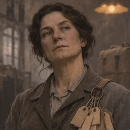
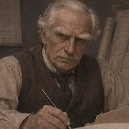
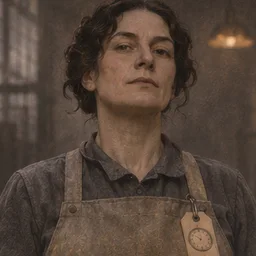

Книга ведущего · Детективный нуар о судебной ошибке · 21+ · 3–8 игроков + ведущий
Приговор под копирку
Шесть лет назад переплётчика Марека Грона осудили за пожар товарного двора, унёсший две жизни. Уважаемая попечительница нанимает вас проверить один чертёж из дела. В городе, где свидетельства переписывали аккуратнее, чем проверяли, исправление приговора может потребовать выступить против собственного заказчика.
Перед чтением вступления сверьте место героев, присутствующих людей и предметы с итогом прошлого вечера. Если условия встречи отпали, сыграйте последствия там, где находится партия. Событие по расписанию может произойти за кадром. Герои узнают о нём от тех, кто был на месте.
Вечер 6. Если заказчица услышала нужный ей вывод раньше проверки
Попросите игроков назвать одно утверждение о пожаре, за которое они уже готовы отвечать. Передайте Миле исходный материал отдельно от слов заказчицы. Поздний разбор может исправить прежний приговор, не называя нового виновного.
Группа отказалась от задания
Не возьмём заказ на пересмотр приговора. Выбивать признание не будем. Предложим Мареку помощь в получении старых экземпляров допроса. Помогаем Мареку запросить свою копию раннего допроса. Марек получает копии, приговор остаётся в силе до пересмотра. Герои вправе закончить на этом.
Игроки раскрыли тайну раньше
Сличим лист общего опроса с подсказанной деталью признания и проверим алиби отдельно от версии о поджигателе. Доступные свидетельства — Лист общего опроса, Признание с подсказанной деталью. Свидетели видели один рисунок, а подробность о фрамуге уже была в вопросе. Согласие показаний не даёт двух независимых подтверждений. Просим сверить первую формулировку вопроса с ответом. Показываем, что прежнее признание зависело от подсказки. Ответственность Зои устанавливается отдельной цепью, а не одной ошибкой суда.
Партия уступила поле
Проход к стене потерян; лично снять обещанный обмер не удалось. Оставляем запрос на первоначальный план стены у хранителя. Запрашиваем подлинные старые планы и помечаем отсутствующий обмер. Просим пересмотра без выдуманной реконструкции.
Карман ведущего
Для игры без подготовки: что говорят люди, места в стороне от главной дороги и прохожие. Пометки о правде слухов — только для ведущего; сказанное за столом становится фактом мира, лишь когда вы его подтвердите.
Слухи
«В Ровеле можно потерять что угодно, кроме копии. Пишешь одно — а листов выходит три: наверх, в архив и себе в карман».
Правда. Городской обычай из пролога. Объясняет, почему у каждого утраченного или закрытого документа есть дубликат у Милы или в приложениях. Нового сведения о деле не даёт.
«Кондукторы не объявляют Седьмую линию, потому что у той арки до сих пор кто-то ходит по ночам. Кто выйдет там после темноты, обратно не просится».
Неправда. Суеверие. Остановку не объявляют по привычке, из уважения к семьям погибших. Во дворе ничего сверхъестественного нет; герои бывают там во втором и шестом вечерах, тупика слух не создаёт.
«Грон потом от признания отказался, это все знают. Да только кто же слушает человека, который однажды уже подписал».
Правда. Марек действительно отказался от признания после изоляции и угроз. Лист признания со страницей вопросов разбирается в первом вечере; слух лишь показывает, как город к этому относится.
«Попечительница Ветлина первой привезла на Седьмую линию одеяла и хлеб. В ту зиму без неё половина погорельцев не дотянула бы до весны».
Отчасти правда. Помощь Софьи реальна, её здесь уважают по праву; «половина» — преувеличение благодарных людей. Слух объясняет, почему её слово весит так много, и ничего не говорит о её правке показаний.
«В «Льняной чашке» перегородки тонкие, сквозь них мысли слышно. Оттого там пришедших порознь никогда рядом и не сажают».
Неправда. Обычай кафе настоящий, а перегородка глухая, до самого потолка. Безобидная шутка завсегдатаев перед вторым вечером; разговоры там действительно остаются отдельными.
«В архиве окружного разбора каждый лист под расписку. Хранительница запишет, сколько минут ты держал бумагу, и не улыбнётся».
Правда. Правило архива из описания места: журнал отмечает каждый взятый лист и время. Подсказывает игрокам законный путь к материалам через Милу, без взлома и уговоров.
«Свидетели по делу Грона тогда сговорились, это же ясно. Слово в слово рассказывали, будто по одной бумаге читали».
Отчасти правда. Поздние одинаковые подробности действительно появились после общего разговора у Софьи и её рисунка. Но сознательно лгать Дина и Савел не договаривались. Не давайте героям называть их лжецами: это закрывает интервью.
«В «Матовой грани» снимают дома для городской оценки. У них в витрине пол-Ровеля, и под каждым снимком дата с номером».
Правда. Так и есть по описанию мастерской. Слух никак не связывает её с делом; что именно Тамара сняла и когда, герои узнают в пятом вечере.
«Номер на доске в приёмной артели мелом не стирают. Сотрёшь — и прошение пропадёт само, будто его и не подавали».
Неправда. Примета приёмной. Прошения хранятся на бумаге, доска лишь для порядка. Годится как реплика посетителя в первом или седьмом вечере; ни к чему не ведёт.
«В чертёжной палате подписывают даже черновые размеры. Старик Руско свою подпись узнает на любой линии, хоть в темноте».
Правда. Обычай палаты и привычка Антона из его описания. Помогает понять, почему он охотно отличает свою работу от чужой копии в третьем вечере; подсказки к легенде слух не даёт.
«Медные козырьки в Ровеле зеленеют быстрее над теми дверями, где врут. Посмотрите на суд — там козырёк совсем зелёный».
Неправда. Городская шутка про зелень на меди, которой покрыты все козырьки от дождя. Ни на кого не указывает и никуда не ведёт; годится для усталого посетителя в прихожей зала.
Места в стороне
Будка выдачи пропусков у Северных ворот
Тесная будка с окошком на уровне груди, где выписывают бумажные пропуска на товарные дворы. Очередь стоит даже под ливнем: без пропуска в Ровеле не пускают ни во двор, ни в контору. Писарь заполняет каждый пропуск под копирку, отрывает корешок и наклеивает его в толстую книгу. Говорят, по этим книгам можно восстановить, кто и когда входил на любой двор за последние десять лет.
Бумажные цветы у водокачки
У кирпичной водокачки напротив Седьмой линии к ограде привязаны бумажные цветы, выцветшие и свежие вперемешку. Свечей здесь не ставят: после того пожара в Ровеле никто не зажигает огня в память о погибших. Таблички с именами нет — семьи просили не писать. Раз в месяц кто-то тихо меняет размокшие цветы на новые, и никто в округе не спрашивает, кто это делает.
Сургучная мастерская на Кривом спуске
Полуподвал, где варят сургуч и режут печати для архивов, контор и почты. Внутри тепло, в воздухе смола и горячий воск, на полках лежат бруски красного, бурого и чёрного цвета. Каждая печать здесь числится в книге заказов, и хозяин гордится, что ни одна не ушла без подписи заказчика. Конторские служащие забегают сюда погреться и заодно узнать, кто заказал новую печать.
Пешеходный мост над путями
Длинный железный мост через сортировочные пути, откуда видны все товарные дворы Ровеля, от депо до Седьмой линии. Внизу перекликаются составы, над головой гудят провода. По старой привычке рабочие, уходя с двора навсегда, бросают с моста вниз свой последний пропуск, и между шпалами иногда белеют обрывки бумаги. Ветер здесь всегда сильнее, чем на улице.
Распивочная «Под копиркой»
Узкое заведение напротив архива, куда после смены заходят писари, копиисты и курьеры. Над стойкой висит вставленный в раму синий лист копирки — говорят, первый, на котором хозяин когда-то переписал долг. Здесь подают горячее пиво с перцем и спорят о почерках так же горячо, как в других местах спорят о погоде. Сплетни о конторах узнают здесь раньше, чем в самих конторах.
Медный навес у трамвайного кольца
Самый широкий козырёк в городе, позеленевший так, что издали кажется листвой. Под ним пережидают ливень, читают объявления, наклеенные слоями, и договариваются о делах. Есть старое правило: тому, кто стоит под этим навесом, нельзя отказать в коротком разговоре, даже если вы с ним в ссоре. Поэтому сюда приходят мириться и просить.
Прохожие
Ефим Лагун
Пожилой кондуктор с мокрыми усами, кожаной сумкой для мелочи и компостером на шнурке.
«Следующая… а, эту мы проезжаем молча. Держитесь крепче».
Может рассказать: Седьмую линию кондукторы перестали объявлять сами, без приказа, в первую зиму после пожара: так попросили соседи погибших.
Варвара Пискун
Писарь из будки пропусков: синие от копирки пальцы, нарукавники и карандаш за ухом.
«Фамилия, двор, цель. И не диктуйте быстрее, чем я пишу».
Может рассказать: Каждый пропуск пишется под копирку в трёх экземплярах: один остаётся у владельца двора, второй в книге будки, третий у того, кто входил.
Кузьма Дрок
Седой печник в фартуке, перепачканном сажей и глиной, с ведром кирпичей в руке.
«Печь, как и человек, тянет плохо, когда её не слушают».
Может рассказать: Перекладывал печь в приёмной артели и знает, что дверь кабинета обили войлоком, чтобы в общей комнате не было слышно ни слова.
Агния Шелест
Повариха Дома взаимной помощи, широкая, румяная, с половником, который она носит, как скипетр.
«Сначала поешьте. Всякие разговоры на голодный желудок выходят злее».
Может рассказать: После пожара на Седьмой линии кухня Дома три дня варила суп для погорельцев, и одеяла отсюда возили на телегах.
Платон Ворс
Газетчик в клеёнчатой накидке, под которой он держит сухую стопку вечерних листков.
«Вечерний выпуск! Про пожары не пишем, про цены на уголь — сколько угодно!»
Может рассказать: Про пожар на Седьмой линии газеты писали неделю, потом перестали, и с тех пор о нём в Ровеле вслух почти не говорят.
Серафима Клин
Курьер архива в форменной накидке, с кожаным тубусом через плечо и пачкой расписок за поясом.
«Без подписи не отдам. Хоть сам председатель проси».
Может рассказать: Бумаги между архивом и залом разбора носят только под расписку: она расписывается у каждой двери дважды, на входе и на выходе.
За десять минут до первой игры
Откройте первый вечер, прочитайте правду мира и участников. Остальные вечера — планы, их исход решают игроки.
Выберите пакет под фактическое число игроков. Первые три героя — готовое ядро; остальные добавляются по порядку. Возраст игрока не определяет героя.
Согласуйте темы, длительность и сигнал паузы. Передайте игрокам только players.html; раздатки выдавайте по отдельности после указанного открытия.
Откройте Мастерскую проекта, создайте личный черновик и импортируйте выбранный JSON через загрузку пакета. Проверьте состав и начало в предпросмотре. Запуск кампании подтверждает ведущий штатным действием.
Откройте иллюстрацию завязки отдельно. Портреты героев входят в файл для игроков, портреты встречных — в книгу ведущего. Тактические схемы доступны в разделе карт.
8 вечеров; 180 минут: вступление и повтор 15, три сцены по 45, перерыв 15, завершение 15. Внутриигровые дни назначает ведущий; вечер игры не равен суткам.
Ровель — вымышленный промышленный город трамваев, бумажных пропусков и фотографических мастерских. Герои работают временной артелью проверки старых дел. Листы воина, плута, жреца и волшебника третьего уровня — условные игровые профили специалиста, а не профессии или магия мира. Заклинания и сверхъестественные эффекты по умолчанию выключены; посох означает абстрактную трость для необязательной схватки. Оружие, право и экспертиза не моделируются как реальные профессиональные процедуры.
Дождь на медных козырьках; уважение, ставшее препятствием; точные вопросы вместо красивой уверенности.
Невиновность и пределы доказанного
Загрязнение памяти добрыми намерениями
Ответственность уважаемого заказчика
Горе семей погибших и цена исправления ошибки
Границы
Все герои и действующие НИП не моложе 21 года; пожар произошёл шесть лет назад, и все его участники уже были взрослыми.
Смерть двух взрослых работников остаётся за кадром; нет подробностей ожогов, сексуального насилия или откровенных сексуальных сцен.
Давление при допросе обсуждается через записи и последствия, без сцен принуждения игроков и без просьб о личном опыте.
До игры согласуйте темы заключения, ложного обвинения и утраты. Любой участник может остановить сцену, заменить подробность или пропустить ответ без объяснения.
Никаких опытов с огнём, рецептов поджога или реальных юридических советов: реконструкция холодная, условная и проводится в безопасном игровом пространстве.
Люди за столом
Первые три героя образуют достаточное ядро: интервью, проверка вещественных источников и защита интересов подследственного. Любой игрок может выбрать любое исследовательское действие; дополнительные места не держат ключей к сюжету.
Перед каждой сценой меняйте первого говорящего. Предложите сначала записать вопрос или вывод; разрешайте пас. Восемь игроков получают по одной конкретной задаче, а не восемь последовательных разговоров с одним НИП.
Разделяйте группу максимум на две линии. Разыграйте по одному действию каждой, затем вернитесь за общий стол приёмной; обмен известными уликами совершают сами герои.
Отсутствующего героя оставьте сверять уже открытые копии. Передайте его действия любому присутствующему по согласию, не открывая личных решений и не пряча ключевую улику у отсутствующего.
Ключевые сведения выдаются за описанное действие. Проверки меняют время, доверие или качество выступления. Ведущий подтверждает игровые последствия вручную; нет автоматических часов обвинения или юридического симулятора.
В споре отделяйте наблюдение, пересказ и вывод на трёх обычных листах. Это способ разговора за столом, не новая механика приложения. Каждое заключение должно выдержать вопрос: что его опровергнет?
Масштабирование группы
3 игроков
Одна линия расследования за раз; распределите интервью, предметы и права Марека между тремя героями, затем поменяйтесь. Дубли и доступ к источникам предоставляет обычный архив, а не дополнительный герой.
4 игроков
Четвёртое место ведёт происхождение копий. Две пары проверяют разные источники и встречаются после одного действия каждой; никто не получает монополию на вывод.
5 игроков
Тройка и пара сравнивают показания и чертёж; пятый участник на общем столе формулирует самое сильное возражение к собственной версии.
6 игроков
Две тройки: задающий вопрос, фиксирующий точные слова, проверяющий пределы наблюдения. На середине вечера роли меняются; вывод каждой тройки обсуждается всеми.
7 игроков
Группы из трёх и четырёх получают независимые маршруты. Седьмой участник следит за цепочкой хранения, затем уступает эту роль; перед решением каждый может дать письменное возражение.
8 игроков
Две четвёрки с отдельными вопросами, предметами, возражениями и последствиями. Возвращайте общий стол каждые два действия; на слушании четыре короткие пары выступлений вместо одной длинной речи.
Первое чтение вслух
Ровель построен вокруг товарных дворов. Склады тянутся вдоль железной дороги, трамваи звенят между ними до полуночи, а над каждой дверью висит медный козырёк, позеленевший от дождей, — под ним здесь пережидают ливень, читают объявления и договариваются о делах. Город держится на бумаге: без пропуска не войдёшь во двор, без накладной не вынесешь рулон, и всё пишется под копирку. Первый лист уходит наверх, второй ложится в архив, третий остаётся у того, кто писал. Говорят, в Ровеле можно потерять что угодно, кроме копии. Шесть лет назад горел товарный двор Седьмой линии. Пожар унёс две жизни, город долго собирал деньги для семей погибших, а переплётчика Марека Грона осудили на девять лет. Об этом деле давно не говорят вслух. Восемнадцать часов. Дождь стучит по медному козырьку приёмной артели прошений, в сушилке у печки парят чужие пальто, на длинном столе лежат стопки чистых бланков. Пахнет мокрой шерстью, чернилами и угольным дымом. Дверь открывается, и входит женщина с седой прядью в тёмных волосах, в безупречно выглаженном воротничке, с истёртым портфелем под мышкой. Многие в городе знают её в лицо: это Софья Ветлина, попечительница Дома взаимной помощи, та самая, что первой привезла одеяла и хлеб погорельцам Седьмой линии. Она кладёт на стол старый приговор и рядом — совершенно чистый лист. «Нужна только одна поправка. Всё остальное тогда было сделано правильно». К приговору приколот чертёж двора. На его полях, у самого края, бледным карандашом проступает слово, которого нет в судебной копии: «предлагается». Софья смотрит на вас и ждёт, кто первым возьмёт лист.
Правда мира · только ведущему
Марек Грон невиновен в поджоге. Шесть лет назад управляющая Зоя Невер умышленно устроила пожар в задней упаковочной двора, чтобы скрыть присвоенные товары перед проверкой запасов. Двое работников, 39 и 51 года, погибли. Способ поджога не детализируется и не воспроизводится.
Ключевое обвинение утверждало, что Марек бросил горящий свёрток через северную фрамугу. Эта фрамуга была наглухо заложена задолго до пожара. Суд получил проект её будущего раскрытия как план существовавшего здания; работы никогда не выполнялись.
Дина Ливен видела человека у восточной арки без лица и предмета в руках. Савел Ортин видел отблеск пожара с другой стороны двора. Никто из них не видел броска. Поздние сходные подробности появились после общего разговора с Софьей и её рисунка; свидетели не договаривались сознательно лгать.
Софья сохранила сомнения первого опроса, но подправила формулировки ради убедительного дела и скорой помощи погорельцам. Она не поджигатель и не знала виновницу. Теперь хочет исключить неверный чертёж, сохранив версию о независимых свидетелях и свою репутацию.
Марек подписал признание после изоляции, бессонной ночи и угроз обвинить взрослую сестру; затем отказался от него. Признание повторяет подсказанную фрамугу и не содержит независимой проверяемой подробности. Подробности давления обсуждаются без отыгрыша допроса.
Три самостоятельных пути исправляют решающую доказательственную опору: ранние заявления и порядок общего опроса; происхождение чертежа и невыполненный заказ; сохранённая кладка и предшествующая пожару фотография. Документы о сбыте товара и доступе Зои дают отдельное основание проверить её, но не заменяют доказательства её вины.
Городской разбор может отменить доверие к конкретному обвинению и направить дело на пересмотр. Признание Зои, оправдание Марека, возмещение и наказание Софьи не предрешены. Ведущий не меняет виновницу под теории игроков.
Повороты сюжета
Только для ведущего. Сюжетные повороты держатся на мелочах, замеченных заранее: посейте их в названные вечера, а раскрытие отдайте героям, если они догадались раньше.
Фрамуга, которой не было
Приговор держится на ясной картине: Марек бросил горящий свёрток через северную фрамугу. На деле эта фрамуга была наглухо заложена задолго до пожара. Суд получил проект её будущего раскрытия — чертёж работ, которые так и не начали, — и принял его за план существующего здания.
Что посеять
Вечер 1. Марек говорит, что слово «фрамуга» впервые услышал от следователя, — и в листе вопросов оно действительно стоит раньше его подписи.
Вечер 1. Мила замечает, что у судебной копии плана обрезано поле, а оригинал хранится в чертёжной палате.
Вечер 2. Савел на месте показывает, что с его поста северную стену закрывал козырёк и никакого проёма он не видел.
Поворот — вечер 3
Антон кладёт рядом полный проект и судебную копию: пунктир означает будущую работу, легенда срезана, а карточка возврата показывает, что к работам не приступали до пожара. Пусть стол сам поймёт, что проёма не существовало. Если чертёжную палату обошли, ту же правду дадут снимок фасада у Тамары и фрагмент кладки в архиве.
Что меняется после
Главная опора обвинения рушится, но новой на её месте не появляется. Теперь вопрос не в том, бросил ли Марек свёрток, а в том, откуда два свидетеля «видели» бросок через несуществующий проём и почему признание повторяет чужое слово.
Память, собранная за одним столом
Два независимых свидетеля описывают один и тот же бросок, и это кажется неопровержимым. На деле Дина видела только спину у арки, Савел — только отблеск над пристройкой. Одинаковые подробности появились позже, когда Софья усадила их рядом, разложила рисунок с открытой фрамугой и убрала оговорки из итоговых записей.
Что посеять
Вечер 2. Дина просит показать «тот рисунок, что был тогда», потому что без него путается, где стояла, а Савел хочет сначала услышать версию Дины.
Вечер 2. Мила показывает в описи дату общего листа помощи — позже первых заявлений свидетелей; содержание листа нужно запрашивать отдельно.
Поворот — вечер 4
В Доме взаимной помощи всплывает подготовительный лист Софьи: рисунок, направленный вопрос «откуда был бросок», вычеркнутые сомнения. Дина узнаёт его: «Нас посадили рядом, меня и Савела». Пусть стол сам поймёт, что совпадение показаний родилось за одним столом. Если лист закрыли, его архивный дубликат лежит у Милы.
Что меняется после
Свидетели перестают быть лжецами и становятся людьми, которым подсказали. Софья из заказчицы превращается в участницу ошибки — не поджигательницу, но и не наблюдательницу. Артели предстоит решить, раскрыть ли это, рискуя оплатой, или ограничиться чертежом и сознательно оставить зависимые показания в деле.
Холст, проданный за два дня
После опровержения старой версии кажется, что виновного уже не найти. На деле у пожара был мотив: управляющая Зоя Невер за два дня до него продала три рулона чужого дорогого холста, а сверку остатков назначили на утро после пожара. Мотив и доступ ещё не доказывают поджог, но дают основание для новой проверки.
Что посеять
Вечер 3. Эмиль, защищаясь, называет дату: сверку складских остатков он назначил на утро после пожара, а служебным дубликатом ключа распоряжалась Зоя.
Вечер 5. В «Матовой грани» на полке стоят фоны из дорогого холста, и Тамара мимоходом говорит, что купила их «за списанную цену» незадолго до того самого пожара.
Поворот — вечер 6
Во Дворе Седьмой линии накладная Зои и расписка Тамары сходятся: три номера партии, одна подпись, за два дня до пожара, а в карточке владельца нет разрешения на списание. Пусть стол сам увидит мотив — и пробел между мотивом и поджогом. Если Зоя и Тамара молчат, те же номера дают архивные дубликаты торгового приложения.
Что меняется после
У артели появляется настоящее подозрение — и самое сильное искушение повторить старую ошибку: вписать новое имя раньше доказательства. Материалы о Зое приходится держать отдельным пакетом, с явными пробелами, чтобы дело Марека не зависело от чужого признания.
Досье дела · только ведущему
Выдерживает ли проверку решающее утверждение старого приговора: Марек Грон бросил горящий свёрток через северную фрамугу и был независимо опознан Диной и Савелом? Отдельный следующий вопрос — кто устроил пожар внутри; ответ не нужен для признания порока старой опоры.
Виновник: Зоя Невер.
Зоя присвоила доверенные рулоны дорогого холста, чтобы сохранить привычный достаток после собственных долгов, и боялась проверки запасов на следующее утро. Она решила уничтожить следы недостачи, сознательно рискуя жизнями взрослых работников. Социальные оправдания не меняют её ответственности.
Фиксированная истина ведущего: Зоя воспользовалась служебным доступом и умышленно устроила пожар в задней упаковочной, затем вышла хозяйственным проходом. Никаких веществ, приёмов воспламенения или инструкций в кампании нет. Марек не поджигал; Софья исказила доказательства уже после события и не была соучастницей пожара.
Что произошло до начала игры
За несколько лет до пожара. Северную фрамугу заложили; при составлении будущего проекта Антон лично осмотрел существовавшую сплошную кладку. Свидетели: Антон Руско.
За девять дней до пожара. Антон подготовил проект раскрытия фрамуги, ясно обозначив будущие работы. Эмиль получил рабочий оттиск. Свидетели: Антон Руско, Эмиль Крест.
За три дня до пожара. Заказ раскрытия отменили до начала работ; задаток вернули. Проект не был осуществлён. Свидетели: Антон Руско, Эмиль Крест.
За два дня до пожара. Зоя продала Тамаре три чужих рулона под видом списания; Тамара поверила заявлению о списании. Карточка владельца партии осталась без разрешения на продажу. Свидетели: Зоя Невер, Тамара Лей.
За день до пожара. Тамара сняла северный фасад для городской оценки: фрамуга оставалась сплошной кладкой. Эмиль назначил проверку остатков на утро после будущего пожара, не зная о нём. Свидетели: Тамара Лей, Эмиль Крест, Зоя Невер.
День пожара, около 19:50. Эмиль выступал на торговом заседании вне двора. Зоя имела служебный дубликат; основной ключ был сдан. Марек пришёл за задержанной платой к восточной арке. Свидетели: Эмиль Крест, Зоя Невер, Марек Грон.
День пожара, между 20:10 и 20:30. Зоя вошла в заднюю упаковочную, умышленно устроила пожар и вышла. Точное время начала по открываемым уликам не устанавливается; это не загадка о подмене часов. Свидетели: Зоя Невер.
День пожара, около 20:30. Дина увидела со спины человека у восточной арки. Савел увидел отблеск над задней пристройкой. Марек помогал взрослым работникам. Двое работников, 39 и 51 года, погибли; никто из названных свидетелей не видел броска через северную фрамугу. Свидетели: Дина Ливен, Савел Ортин, Марек Грон.
Следующее утро. Дина и Савел дали отдельные ограниченные заявления. После длительного допроса Марек подписал текст, содержащий подсказанную фрамугу; позднее отказался от признания. Угрозы подтверждаются только его рассказом, последовательность вопроса и ответа — документами. В этот день Антон передал Софье рабочий оттиск проекта для объяснения устройства двора. Свидетели: Дина Ливен, Савел Ортин, Марек Грон, Антон Руско, Софья Ветлина.
Через два дня после пожара. Софья провела общий разговор с рисунком проекта, сблизила ответы свидетелей и удалила оговорки. Дина и Савел приняли часть обсуждения за подтверждённую картину события. Свидетели: Софья Ветлина, Дина Ливен, Савел Ортин.
Через два месяца после пожара. Старый суд признал доказанным бросок через фрамугу и осудил Марека. Сохранённый фрагмент стены остался в приложениях без сопоставления с проектом. Свидетели: Марек Грон, Софья Ветлина.
За неделю до начала кампании, шесть лет спустя. Софья обнаружила полную легенду на возвращённом оттиске и договорилась о предметном разборе. Она решила нанять артель для узкого исправления плана, не открывая собственной правки показаний. Свидетели: Софья Ветлина, Лидия Ост.
Независимые пути доказательства
Независимость свидетельств проверяется их происхождением
Первые раздельные записи не содержат опознания или броска; документ общего опроса показывает, откуда пришла одинаковая поздняя деталь. Проверка позиций подтверждает границы наблюдения. Даже без чертежа и фотографии это опровергает заявленную независимость двух подтверждений. Не доказывает сознательную ложь свидетелей, не устанавливает поджигателя. Используется в вечерах 2, 4 и 7–8.
Улики: Первые отдельные заявления; Лист общего опроса; Схема пределов зрения.
Проект нельзя принять за построенный проём
Полная легенда и совпадающий контур связывают судебную копию с будущим проектом. Отдельный возврат заказа подтверждает, что именно эти работы не начались. Даже без новых показаний и физического предмета исчезает основание считать рисунок подтверждением существовавшего проёма. Возможность иных поздних работ нужно проверять отдельно, а не объявлять невозможной по одной бумаге. Используется в вечерах 3 и 7–8.
Улики: Проект, ставший обмером; Возврат неисполненного заказа.
Материальная пара до и после события
Датированный независимым заказом снимок до пожара и зарегистрированный после него фрагмент показывают одну непрерывную старую кладку на месте фрамуги. По установленным условным свойствам предмета отсутствует проём для заявленного броска. Пара достаточна для опровержения данного действия без Софьи, свидетелей и объяснения Антона. Она не устанавливает намеренность пожара или лицо внутри. Используется в вечерах 5 и 7–8.
Улики: Сохранённая перемычка; Фасад до пожара.
Подозреваемые
Марек Грон
Увольнение и удержанная плата; приход ко двору в вечер пожара.
Его присутствие реально; признание существует. Поздние свидетели и схема внешне поддерживали одну конкретную версию.
Материальная пара опровергает приписанный бросок. Источники показаний и признания зависимы от подсказок. Это разрушает именно старую опору; безупречный характер или полное алиби не требуются. Ведущий знает невиновность, но игроки и суд не обязаны получать её как авторский приказ.
Софья Ветлина
Сохранить репутацию спасительницы семей и прикрыть собственные исправления.
Лист общего опроса доказывает её редактуру и совместную подготовку; предложение ограничить заказ показывает нынешний конфликт интересов.
Её документированные действия произошли после пожара. Условия помощи не зависели от имени виновного. Ни один источник не даёт ей доступ в упаковочную или связывает её с исчезнувшим товаром; виновность в порче доказательств не переносится автоматически на поджог.
Эмиль Крест
Страховая выгода, конфликт с Мареком, опасение проверки своих выплат.
Завышенное страховое требование и задержка платы подтверждаются; у владельца был хозяйственный интерес.
Стенограмма и запись аренды подтверждают его нахождение вне двора. Это исключает версию личного поджога в описанный период; версия заказа требует новых положительных данных. Отсутствие таких данных нельзя заменить его неприятностью.
Зоя Невер
Скрыть неразрешённую продажу перед утренней проверкой остатков.
Накладная, расписка и номера холста независимо связывают её с продажей. Дубликат ключа и первоначальное объяснение помещают её в заднюю упаковочную, а нынешнее отрицание расходится с записью. Ранний обход и отблеск поддерживают внутреннюю версию.
Заявление «это было списание» недостаточно: владелец партии его не разрешал. Вместе с тем продажа, доступ и противоречие ещё не равны доказанному поджогу. Её молчание не добавляет вины. Фиксированная истина ведущего не меняется; исход отдельного нового дела в этой кампании не гарантирован.
Проверяемые ложные версии
Одинаковая подробность у двух свидетелей означает два независимых подтверждения.
Ранние заявления и лист совместного опроса позволяют проследить общий источник. Яркость поздней памяти не устраняет зависимость.
Проверка: Первые отдельные заявления; Лист общего опроса; Схема пределов зрения.
Эмиль получил лишние страховые деньги, значит лично поджёг свой двор.
Отдельный финансовый проступок не отменяет документированное присутствие в другом районе. Предположение о заказе требует собственного подтверждения.
Проверка: Заседание вне двора; Условия помощи семьям.
Исправление приговора автоматически лишит семьи погибших помощи.
Подписанное условие привязывает выплаты к утрате, а не к имени осуждённого. Страх Софьи был её убеждением и не оправдывает правку чужих слов.
Проверка: Условия помощи семьям; Лист общего опроса.
Если расследование зашло в тупик
Ложное обвинение: Лидия просит назвать проверяемый поступок и источник. Герои могут письменно отозвать обвинение Софьи в поджоге, Эмиля в личном участии или готовый вердикт Зое; адресно исправить прежнее сообщение и подать узкое ходатайство. Цена — потеря доверия и отложенный разговор, а не уничтожение уже проверенных улик.
Утраченный предмет: фиксировать повреждение, получить приёмные изображения и архивный дубликат фотографии, честно снизить уверенность материального пути. Маршруты происхождения показаний и чертежа остаются полностью доступны; не создавать чудесно найденный новый оригинал.
Несговорчивый свидетель: прекратить давление, предложить отдельный письменный ответ или отказ. Ранние заявления, общий лист и старые позиции доступны независимо; свидетель не обязан произносить нужную героям реплику.
Софья снимает оплату: приёмная предоставляет стол до слушания в счёт будущего взноса, либо герои ведут только один достаточный маршрут. Это меняет личные издержки и эпилог, не делает остальные доказательства платным замком.
Двор закрыт: провести настольное сравнение по старому обмеру с указанными допущениями, запросить официальный осмотр через Лидию. Без реального доступа не объявлять новые размеры установленными.
Недостаточная новая версия: передать материалы о Зое как просьбу о проверке с возражениями, а не требовать её признания. Исправление ошибки в деле Марека допускается без завершённого нового расследования.
Восемь вечеров
1. Одна чистая страница — Принять или изменить границы заказа и сформулировать проверяемый вопрос вместо обещания оправдать.
2. Две отдельные памяти — Проверить границы наблюдения и не создать новую общую версию собственным опросом.
3. Окно, которого не строили — Установить происхождение судебного рисунка и проверить привлекательного подозреваемого теми же строгими средствами.
4. Заказчица на полях — Установить роль заказчицы в судебной ошибке и решить, кому теперь принадлежит работа артели.
5. Стена до и после — Построить независимую материальную проверку обвинения и явно назвать пределы реконструкции.
6. Другое имя на том же бланке — Проверить конкретное подозрение в отношении Зои, не заменить старую недоказанную вину новой.
8. Разбор без признания — Выдержать состязательную проверку одного обвинения, выбрать точный исход и прожить личные последствия без заранее написанной победы.
Места
Ровель
Город товарных дворов и трамвайных линий; дождь собирается под медными козырьками. Склады тянутся вдоль железной дороги, над каждой дверью висит позеленевший козырёк, а без бумажного пропуска здесь не пускают ни во двор, ни в архив. Всё пишут под копирку, и горожане шутят, что в Ровеле можно потерять что угодно, кроме копии. Пожар на Седьмой линии здесь помнят до сих пор, хотя вслух о нём говорят редко.
Приёмная артели прошений
Длинный стол, сушилка для пальто и отдельный кабинет для разговоров без посторонних. Приёмная артели прошений занимает первый этаж бывшей конторы; над входом гудит под дождём медный козырёк, у печки сохнут чужие пальто. Сюда приносят просьбы пересмотреть старые дела, и на доске у двери мелом пишут номера принятых прошений. Дверь кабинета обита войлоком, чтобы в общей комнате не было слышно слов.
Архив окружного разбора
Стеллажи копий, стол выдачи и шкаф опечатанных вещественных приложений. В архиве окружного разбора пахнет пылью, сургучом и сухой бумагой, лампы горят даже днём. На столе выдачи лежит журнал, куда записывают каждый лист, взятый в руки, и каждую минуту, пока он был не на месте. Правило здесь старое и строгое: ни одна бумага не выходит за дверь без расписки.
Двор Седьмой линии
Бывший товарный склад: уцелевшая северная стена, восточная арка и закрытая задняя пристройка. Одно крыло двора снова работает, там выдают складские места и пахнет мешковиной и машинным маслом. Над аркой нависает низкий козырёк, с которого всегда капает. Остальная часть двора огорожена, камни там до сих пор темнее, чем на улице, и трамвайные кондукторы по привычке не объявляют эту остановку вслух.
Чертёжная палата
Образцы кирпича стоят рядом с рулонами планов; на каждом столе линейка и журнал выдачи. В чертёжной палате тихо, как в читальне, слышно только шуршание кальки и скрип рейсфедеров. Над столами висят зелёные лампы, а в длинных ящиках по номерам хранятся проекты всех дворов линии. Здесь принято подписывать даже черновые размеры, и старые техники гордятся, что их подпись стоит на каждой линии.
Кафе «Льняная чашка»
Две изолированные кабинки и окна на трамвайную остановку; хозяева берегут тихие разговоры. Салфетки здесь льняные, чашки тяжёлые, чай подают в чайниках под стёганым колпаком. По давнему обычаю «Льняной чашки» двух гостей, пришедших порознь, никогда не сажают в соседние кабинки. Окна запотевают быстро, и за ними трамваи кажутся размытыми жёлтыми пятнами.
Дом взаимной помощи
Общая столовая, объявления о пособиях и кабинет попечительского собрания. На первом этаже пахнет супом и мокрыми зонтами, на длинных скамьях обедают рабочие с соседних дворов. Стена у входа сплошь в объявлениях: пособия, места, просьбы о помощи. После пожара на Седьмой линии отсюда возили одеяла и хлеб погорельцам, и в городе этого не забыли.
Фотографическая мастерская «Матовая грань»
Витрина городских фасадов, стол просмотра негативов и шкаф заказных отпечатков. В витрине «Матовой грани» выставлены снимки домов Ровеля — от доходных особняков до складских ворот, — каждый с датой и номером. Внутри пахнет закрепителем и горячей лампой, в задней комнате горит красный свет. Мастерская берёт заказы городской оценки, и журнал работ здесь ведут так же аккуратно, как в конторе.
Зал предметного разбора
Небольшой зал с местом для одного макета, стола источников и скамей для заинтересованных сторон. Окна высокие и узкие, на стенах ничего, кроме часов. Здесь не разбирают дела целиком: рассматривают одно утверждение за раз. По обычаю зала каждый предъявленный лист кладут на общий стол, и любая сторона вправе подойти и прочесть его сама, прежде чем отвечать.
Софья Ветлина
54 лет. Седая прядь, безупречно выглаженный воротник и истёртый портфель. Попечительница Дома взаимной помощи, известная своевременной поддержкой погорельцев.
Место: Приёмная артели прошений
Намерение
Добиться исправления чертежа, не раскрывая свою роль в изменении показаний.
Собственные знания
Сама устроила общий опрос и сохранила подготовительные листы в делах помощи.
Получила проект от Антона и передала его в суд без поля с назначением.
Недавно обнаружила в возвращённом экземпляре слово «предлагается» и решила заказать узкую проверку.
Не видела пожара и не знает, кто его устроил; тогда поверила признанию Марека.
Что говорит
При первой встрече. «Я плачу за чертёж. Свидетелей не трогайте — они своё уже рассказали. Две семьи шесть лет живут на то, что город им собрал».
О своей правке. «Я убрала сомнения, которые мешали помочь живым. Вы не видели этих женщин в первую зиму. Им нужен был хлеб, а не „может быть“».
О признании Марека. «Никто не водил его рукой, когда он подписывал. Я поверила признанию, как поверил весь город. Это грех?»
О слове «предлагается». «Я нашла его в возвращённом экземпляре. „Предлагается“. Одно слово — и вся линия стала проектом. Я хочу исправить только это».
Если её обвиняют в поджоге. «Я не поджигала и не знаю, кто поджёг. Я делала дело убедительнее. Это разные грехи, и за свой я отвечу».
Узнав о выплатах. «Шесть лет я боялась того, чего не было. Выплаты не зависят от имени. Почему я ни разу не дочитала договор до конца?»
Секрет или личное убеждение
Она собрала Дину и Савела вместе, показала проект как картину события и убрала их оговорки из итоговых записей. Считает, что защищала семьи погибших; это её оправдание, не установленная необходимость.
Граница и раскрытие
Не сообщает тайну Зои, содержание закрытого архива или будущую реакцию суда. Её уверенность в виновности Марека — мнение.
На прямое сравнение ранних и поздних формулировок сначала говорит о редактуре; предъявление её листа заставляет признать собственные действия, но не требует раскаяния.
Марек Грон
44 лет. Пальцы переплётчика, слишком большое казённое пальто и ровная речь. Осуждённый на девять лет переплётчик, доставленный на разрешённые консультации перед разбором прошения.
Место: Зал предметного разбора
Намерение
Опровергнуть приписанный ему поступок и самому решать, какие части его истории станут публичными.
Собственные знания
В вечер пожара пришёл за задержанной платой и стоял у восточной арки.
Видел дым и помог вынести одного взрослого работника; источника огня не видел.
Следователь назвал фрамугу до того, как Марек подписал признание; подробности в тексте не его наблюдения.
До пожара спорил с Эмилем из-за увольнения и не скрывает этого.
Что говорит
При первой встрече. «Вы мне верите или собираетесь что-то проверить? Если проверить — хорошо. Верить мне уже пробовали, и это не помогло».
О вечере пожара. «Я пришёл за деньгами, которые мне задолжали, и стоял у восточной арки. Потом увидел дым и вытащил одного человека. Огня не видел».
О фрамуге. «Слово „фрамуга“ я впервые услышал от следователя. Потом оно оказалось в признании — моей рукой, но не моим словом».
О давлении. «Про ту ночь я расскажу, если захочу. Пока не хочу. Бумага с вопросами скажет больше, чем я».
Об Эмиле. «Да, я спорил с ним из-за увольнения, не скрываю. Но спор — не пожар. Не делайте из моей злости улику против него».
Если пересмотр открыт. «Я ещё не свободен. Но сегодня здесь впервые вслух сказали, что фрамуги не было».
Секрет или личное убеждение
Подписал признание после изоляции и угроз в адрес взрослой сестры. Стыдится, что тогда согласился на слова о фрамуге, которой не видел открытой.
Граница и раскрытие
Не знает виновницу, общей беседы свидетелей или происхождения чертежа. Не называет догадку о мести работодателя фактом.
При возможности говорить без Софьи объясняет происхождение признания; от подробного рассказа о давлении может отказаться, не закрывая доступ к документу.
Зоя Невер

46 лет. Серый рабочий костюм, тяжёлая связка бирок и усталое внимание к чужим сумкам. Управляющая уцелевшим крылом товарного двора; ведёт выдачу складских мест.
Место: Двор Седьмой линии
Намерение
Сохранить работу и не допустить проверки своей продажи товаров перед пожаром.
Собственные знания
Сама продала Тамаре три рулона из доверенной партии и сохранила один экземпляр квитанции в обязательной папке выдачи.
Имела служебный дубликат ключа и вошла в заднюю упаковочную перед пожаром.
Устроила пожар внутри и ушла через хозяйственный проход; способ не рассказывается подробно.
Узнала о признании Марека из объявления после суда; на опросах Софьи не присутствовала.
Что говорит
При первой встрече. «Сумки на стол, бирки — мне. Здесь выдают складские места, а не ответы на вопросы шестилетней давности».
О списании. «Списание — это когда рулон подмочен или порван и его отдают за полцены, чтобы не гнил. Так делают на каждом дворе линии».
О подписи на квитанции. «Подпись моя. Товар был списан. Остальное спрашивайте у тех, кто тогда проверял».
О противоречии в объяснениях. «После пожара все писали неточно. И вы бы писали, если бы рядом горело».
Если на неё давят. «Я не обязана вам отвечать. Хотите — несите свои бумаги куда положено. Я подожду».
На разборе. «Я не поджигала. Больше мне сказать нечего — ни вам, ни председателю».
Секрет или личное убеждение
Присвоила чужие рулоны дорогого холста и устроила пожар в задней упаковочной перед проверкой запасов. Знала, что на территории работают взрослые люди, и всё равно пошла на риск; не подменять это несчастным случаем.
Граница и раскрытие
Знает собственные поступки, но не читает мысли свидетелей и не знает найденных героями дублей, пока ей их не предъявят.
Продажу объясняет списанием; после подлинной квитанции признаёт продажу, но может до конца отрицать поджог и требовать доказательств. Признание не необходимо.
Дина Ливен
40 лет. Штопальный напёрсток на цепочке и аккуратно сложенная шаль. Мастерица, чьи показания фигурировали в старом приговоре.
Место: Кафе «Льняная чашка»
Намерение
Понять, какие воспоминания принадлежат ей, не потеряв право скорбеть о знакомых.
Собственные знания
Стояла у восточной арки и видела со спины человека в рабочем пальто.
Софья позднее посадила её рядом с Савелом и разложила рисунок с открытой фрамугой.
Подписала итоговый лист после обсуждения; точные слова первой записи сейчас помнит плохо.
Что говорит
При первой встрече. «Покажите тот рисунок, что был тогда. Без него я путаюсь, где стояла. Или не надо… я уже не знаю».
О своей ранней записи. «Это мой почерк. Тогда я написала, что лица не видела. А теперь вижу его каждую ночь».
Об общем разговоре. «Нас посадили рядом, меня и Савела. Софья разложила рисунок и спросила, откуда был бросок. Я подумала: раз спрашивают откуда, значит, бросок был».
О своём страхе. «Если я скажу, что не видела, меня назовут лгуньей. А если скажу, что видела, — я и правда ею стану».
О погибших. «Я их знала, обоих. Я хочу их помнить, а не спорить о них в зале».
На разборе. «Я видела спину. Только спину. Остальное мне показали».
Секрет или личное убеждение
Теперь уверенно представляет бросок, но при первом опросе не видела ни лица, ни предмета. Боится, что признание этой границы сделает её сознательной лгуньей в глазах города.
Граница и раскрытие
Не видела начала пожара или виновницу. Позднюю яркость образа ведущий не превращает в скрытую точность.
При отдельном разговоре без требования вспомнить ещё признаёт границы зрения. Раннюю запись можно получить и без её нового согласия на выступление.
Савел Ортин
47 лет. Трамвайная куртка без знаков службы и монета, которую он перекладывает между пальцами. Бывший обходчик линии и второй свидетель обвинения.
Место: Кафе «Льняная чашка»
Намерение
Не выглядеть человеком, который подвёл погибших, когда от него просили помочь.
Собственные знания
Из своего поста видел отблеск над задней пристройкой, но северную фрамугу закрывал козырёк.
На общем разговоре услышал имя Марека и сравнение чужих ответов со своими.
Лично подписал поздний лист; не знает, кто писал окончательную судебную сводку.
Что говорит
При первой встрече. «Скажите, что говорит она. Я не хочу снова оказаться тем, кто всех подвёл».
О своём посте. «Мой пост был там, у будки на линии. Козырёк закрывал северную стену. Я видел только свет над крышей пристройки».
Об имени Марека. «Имя я услышал за тем столом. Раньше я его не знал. Мне показалось, что все уверены, — и я стал уверен тоже».
Если его называют лжецом. «Я не лгал. Я ошибся, когда все ошибались вместе. Больше я с вами не разговариваю».
О монете. «Эту монету мне дал один из тех двоих — за то, что я придержал ему дверь вагона. С тех пор ношу».
Подписывая поправку. «Мне стыдно, но это правда: фрамугу я не видел. Запишите так, как я сказал, не красивее».
Секрет или личное убеждение
Никогда не различал Марека во дворе; принял уверенность Дины и рисунок Софьи за подтверждение собственной догадки.
Граница и раскрытие
Не знает, что видела Дина на самом деле, и не может засвидетельствовать продажу товаров или начало огня.
Соглашается обозначить свой пост на пустой схеме. Если его обвиняют во лжи, отказывается говорить, но первоначальная схема остаётся доступна в архиве.
Антон Руско

62 лет. Белые брови, старый жилет и привычка подписывать даже черновые размеры. Техник чертёжной палаты, выполнивший проект переустройства двора.
Место: Чертёжная палата
Намерение
Отделить свою ошибку передачи проекта от того, чего он никогда не обследовал.
Собственные знания
Начертил будущее раскрытие северной фрамуги, обозначив существующую кладку отдельной линией.
Получил возврат заказа без исполнения до дня пожара.
При осмотре до проекта видел сплошную кладку; во время пожара во дворе не был.
Что говорит
При первой встрече. «Руками не трогайте, калька старая. Я сорок лет подписываю даже черновые размеры — и этот лист подписан тоже».
О легенде. «Пунктир — будущая работа. Сплошная — то, что есть. Сплошной линии на месте пунктира я не проводил».
О передаче оттиска. «Рабочий оттиск отдал я, без заверения. Кто сделал из него судебную копию, не знаю — и в том моя вина, что не спросил».
О возврате заказа. «Задаток вернули, к работам не приступали. До пожара фрамуга стояла заложенной — я сам видел кладку при обмере».
О пределах своих знаний. «Я отвечаю за линии и кирпичи. Кто стоял у стены и что делал, кирпич не скажет, и я за него не скажу».
О кладке на снимке. «Ложок, тычок, ложок — обычная перевязка. Окна здесь не было, был кирпич».
Секрет или личное убеждение
Отдал Софье незаверенный рабочий оттиск и не проверил, как его используют. Знал о неисполненном заказе, но на суд не вызывался.
Граница и раскрытие
Не эксперт по пожарам, не знает мотивов Софьи или Зои и не устанавливает виновного по чертежу.
При предъявлении копии предлагает сопоставить её с проектным оригиналом. Даже отказ оправдываться не препятствует выдаче официального возврата заказа.
Мила Фарс

35 лет. Защитный фартук, сухие ладони и небольшая бирка с часами выдачи. Хранительница приложений к старым делам.
Место: Архив окружного разбора
Намерение
Выдать материалы с понятным происхождением и вернуть их в целости.
Собственные знания
Где лежат ранние заявления, судебная копия плана и лист признания.
По описи фрагмент северной кладки поступил после пожара и не покидал хранилище.
Условия выдачи копий и записи о передачах; самого пожара не видела.
Что говорит
При первой встрече. «Каждый лист — под расписку, и я ставлю время. Не обижайтесь: если бумага пропадёт, спросят меня».
О слове «доказано». «Здесь ничего не доказано. Здесь записано. Это разные полки, и я не путаю их даже в пятницу вечером».
О двух планах. «Названия двух планов не совпадают. Я заметила давно, но в опись мнений не пишут. Теперь вы спросили — я ответила».
О фрагменте кладки. «Сначала карточка, потом рама. Предмет без карточки — просто кирпич, а с карточкой — приложение к делу».
О выносе предмета. «Вынести его можно только со мной и с записью в журнале. Иначе это уже не доказательство, а находка».
О дубликатах. «Если папку где-то закроют, второй экземпляр у меня под номером. Архив для того и существует».
Секрет или личное убеждение
Обнаружила несоответствие названий двух планов, но не сообщала о нём вне описи, опасаясь обвинения в самовольном толковании дела.
Граница и раскрытие
Не знает содержания ещё не прочитанных героями закрытых пакетов наизусть и не подтверждает истинность свидетельских утверждений.
За конкретный номер дела выдаёт разрешённую копию без проверки навыка. Для подлинника предлагает присутствие хранителя или официальный осмотр в зале.
Эмиль Крест
58 лет. Дорогие, давно нечищенные ботинки и потёртый значок попечителя. Владелец двора, пожертвовавший часть страховой выплаты семьям погибших.
Место: Дом взаимной помощи
Намерение
Сохранить авторитет и не обсуждать задержки зарплаты, предшествовавшие пожару.
Собственные знания
Назначил проверку складских остатков на утро после пожара.
Зоя распоряжалась служебным дубликатом; сам сдал основной ключ перед отъездом на собрание.
Во время пожара выступал на заседании торговой палаты в другом районе.
Выплаты семьям по подписанному соглашению не зависят от имени осуждённого.
Что говорит
При первой встрече. «Эмиль Крест, владелец двора. Я отдал семьям часть страховки. Чего ещё от меня хотят шесть лет спустя?»
Об алиби. «В тот вечер я выступал в торговой палате, меня слышало полгорода. Стенограмма у секретаря».
О деньгах. «Задаток вернули, потому что к работам не приступали. Плату Грону задержали, потому что был спор. Всё это — не пожар».
Если его обвиняют. «Уберите из своих бумаг слово „поджёг“. Остальное пишите что хотите, мне не впервой».
О Зое. «Вот она, ваша поджигательница. Ключ у неё, из упаковочной выходила она. Чего вам ещё надо?»
О выплатах семьям. «Платим за потерю кормильца, так и написано. Фамилии осуждённого здесь нет и никогда не было».
Секрет или личное убеждение
Действительно удерживал плату Марека и подал завышенное требование страховщику. Поджога не заказывал; надежда, что старый приговор закроет все вопросы, — его собственный интерес.
Граница и раскрытие
Не знает, что именно сделала Зоя, и не может дать ей достоверное алиби. Отсутствие на месте не доказывает отсутствие любого сговора.
Открывает условия выплат, когда герои обещают передать их семьям точно; преувеличенную сумму признаёт только при сопоставлении требования и оценки.
Тамара Лей
52 лет. Матовый фартук, нитка на рукаве и внимательный взгляд поверх очков. Фотограф городских фасадов и хозяйка мастерской «Матовая грань».
Место: Фотографическая мастерская «Матовая грань»
Намерение
Сохранить доверие заказчиков, не скрывая неудачную покупку материала.
Собственные знания
Сняла северный фасад за день до пожара по заказу городской оценки; сохранила негатив и журнал работ.
Получила от Зои три рулона с номерами партии и подписанную квитанцию за два дня до пожара.
Не присутствовала при пожаре и не знает, законно ли Зоя распоряжалась товаром.
Что говорит
При первой встрече. «Осторожно, фоны сохнут. Хотите снимок — смотрите журнал, а не меня. Я могу ошибиться, журнал — нет».
О снимке фасада. «Фасад я снимала по заказу городской оценки, за день до того вечера. Оценщик расписался в получении отпечатка, вот его рука».
О покупке холста. «Дорогой холст за списанную цену — кто бы отказался? Откуда он, я не спрашивала. Теперь мне за это стыдно».
О своём страхе. «Я не скупщица краденого. Но если меня так назовут, заказчики уйдут раньше, чем я успею объяснить».
О негативе. «Негатив не умеет льстить, а журнал — забывать. Увеличение красивое, но красивое — не значит верное».
Если просят гарантий. «Я отвечаю за свой снимок. За весь пожар — нет. Не просите меня свидетельствовать о том, чего я не снимала».
Секрет или личное убеждение
Купила у Зои три дорогих рулона для фонов, считая их списанными. После пожара не связала покупку с делом Марека и теперь боится выглядеть скупщицей краденого.
Граница и раскрытие
Датирует собственные снимки и покупку по журналу; не определяет происхождение огня и не выдаёт свою тревогу за признание соучастия.
Предоставляет снимок при согласии показать его оборот и журнал. Квитанцию выдаёт после объяснения различия между покупкой и знанием о краже; есть дубликат в торговом приложении.
Лидия Ост
60 лет. Тёмное платье, простые часы и карандаш, который она кладёт перед ответом. Председатель предметного разбора: рассматривает основание для пересмотра, не проводит новое полное дело.
Место: Зал предметного разбора
Намерение
Получить узкое проверяемое требование и дать каждой стороне оспорить источники.
Собственные знания
Знает текст старого решения и пределы назначенного разбора.
Может проверить поданные источники и выслушать возражения после их предъявления.
Не участвовала в прежнем суде и не знает настоящего виновного.
Что говорит
При первой встрече. «Я рассматриваю одно утверждение, а не всё дело и не всех людей. Принесите мне узкое требование».
О правиле зала. «Я не оцениваю, кто из вас приятнее. Я оцениваю, что лежит на столе».
О пределах разбора. «Разбор может снять одну опору и открыть пересмотр. Освободить он не может, и нового приговора не выносит».
О широком требовании. «Узкое требование труднее отклонить. Широкое — легче. Решайте сами, что вам дороже: громкость или результат».
О своём прежнем отказе. «Однажды я отказала просителю, перепутав нехватку доказательств с отсутствием ошибки. Его фамилию я помню до сих пор».
О новом виновном. «Убрать из старого решения то, что не выдержало проверки, я могу. Назначить нового виновного по одному мотиву — нет».
Секрет или личное убеждение
Раньше отказала другому просителю, перепутав недостаток доказательств с отсутствием ошибки. Теперь особенно следит, чтобы осторожность не стала удобным бездействием.
Граница и раскрытие
Не получает истину ведущего и не обещает оправдание. Каждое решение опирается только на материалы, действительно представленные в сцене.
До слушания объясняет форму ходатайства и возможность исправить чрезмерное обвинение. О собственном прежнем отказе говорит лишь при разговоре об ответственности.
Возможные финалы
Исправление без подмены
Условия: Герои показали проверяемый порок хотя бы одной решающей опоры: невозможность броска, ошибочный статус проекта или зависимость показаний; раскрыли известные ограничения и попросили пересмотр, не объявляя новую вину установленной.
Разбор исключает порочную опору и направляет дело Марека на пересмотр; меру ограничения суд обсуждает отдельно. Материалы о Зое регистрируют для новой проверки, если герои их представили.
Цена: Марек ещё ждёт окончательного решения. Софья лишается права руководить опросами; артель может потерять её оплату. Семьям погибших приходится пережить неопределённость.
Эпилог — читать вслух
Через неделю в канцелярии окружного разбора вешают короткое извещение: из решения по делу Марека Грона исключена схема с северной фрамугой, дело направлено на пересмотр. Ни слова о новом виновном, ни слова о свободе — только то, что выдержало стол Лидии Ост. Марек по-прежнему ждёт в казённом пальто, но теперь у его ожидания есть дата. Мила подшивает в архив снимок, кладку и карточку возврата одной папкой, с аккуратной описью. Материалы о Зое лежат отдельно, под своим номером, и ждут собственного разбора; Зоя выдаёт складские места и делает вид, что ничего не случилось. Софья больше не руководит опросами Дома помощи и не приходит в приёмную артели; её оплата так и не поступила. Дина приносит в «Льняную чашку» новую шаль и впервые за шесть лет садится за столик у окна, а не в углу. Семьи погибших получают те же выплаты, что и раньше, — и новую неопределённость, которую придётся пережить. На доске у двери приёмной кто-то стирает номер старого прошения и пишет мелом новый. Дождь на медных козырьках не утихает, а фрамуга на северной стене так и остаётся заложенной.
Поправка по заказу
Условия: Герои доказали ошибку чертежа, но сознательно удержали известную им историю общего опроса.
Техническую схему исключают; зависимые показания остаются спорной опорой, и пересмотр откладывается до дополнительной проверки. Софья платит оговорённый гонорар, если сохранила средства.
Цена: У Марека появляется шанс, но его дело остаётся в подвешенном состоянии. Артель хранит собственное умолчание; Дина вправе позднее раскрыть его без разрешения героев.
Эпилог — читать вслух
Техническую схему исключают из решения: проект будущих работ больше не выдаёт себя за план здания. Это победа, и Софья благодарит за неё сдержанно, отсчитывая оговорённый гонорар. Общий лист опроса остаётся в папке артели, перевязанный бечёвкой, и никто его не открывает. Показания Дины и Савела по-прежнему считаются независимыми, и пересмотр откладывают до дополнительного изучения. У Марека появился шанс, но его дело висит в воздухе, как неубранная рама. Он не благодарит и не упрекает — просто ждёт, как ждал шесть лет. Дина однажды заходит в приёмную артели, долго стоит у двери и уходит, ничего не сказав. Она вправе сама рассказать о той встрече у Софьи, когда захочет, и разрешения артели ей для этого не нужно. Мила ставит в журнале отметку «удержано по решению артели» и не добавляет к ней ни слова. Деньги на столе приёмной кончаются через месяц. Умолчание — нет. Оно остаётся с каждым, кто его выбрал, тихое и аккуратное, как хорошо выглаженный воротник.
Новое имя на старом бланке
Условия: Герои требуют признать Зою виновной на основании одной продажи товара или подозрительного ухода и не исправляют это после возражения.
Председатель отклоняет неподкреплённую часть ходатайства. Проверенное опровержение старой версии сохраняется, но дело о Зое не получает желаемого вывода; возможен новый разбор с более узкой формулировкой.
Цена: Зоя получает основание требовать публичного исправления. Свидетели меньше доверяют артели, а Марек видит повторение обращения с ним.
Эпилог — читать вслух
Лидия Ост отклоняет ту часть ходатайства, где Зою Невер называют виновной: один мотив и один ключ не равны поджогу. Опровержение старой схемы остаётся в силе — фрамуги не было, это установлено, — но дело о Зое не получает желаемого вывода. Возможен новый разбор с более узкой формулировкой; кто будет его готовить, артель пока не решила. Зоя подаёт письменное требование публично исправить обвинение — и у неё есть основание его требовать. Она выдаёт складские места, как вчера, но теперь у её стойки толпятся любопытные. Свидетели меньше доверяют артели: Дина не приходит на условленную встречу, Савел перестаёт здороваться на остановке. Марек узнаёт об исходе из короткой записки и долго молчит. Потом пишет ответ ровным почерком переплётчика: «Со мной тоже так было. Имя вписали раньше доказательства». Записку подшивают в папку артели — рядом со старым приговором, который тоже начинался с уверенности. Тамара Лей отзывает разрешение показывать свою расписку. Дождь на медных козырьках стучит неровно, будто сбился со счёта.
Честная отсрочка
Условия: Источники утрачены или их происхождение пока не подтверждено; герои называют пробелы и просят сохранить материалы и время для проверки.
Разбор фиксирует конкретные спорные пункты и назначает продолжение вместо готового оправдания. Доступ к дублям и право свидетелей на отдельный опрос остаются открытыми.
Цена: Свобода Марека не возвращается этой ночью. Нужно выбрать, кто оплатит дальнейшую работу и какую публичную надежду герои готовы поправить.
Эпилог — читать вслух
Разбор не заканчивается этой ночью. Лидия Ост перечисляет спорные пункты вслух, по одному, и назначает продолжение: какого листа не хватает, у кого его искать, к какому сроку. Готового оправдания нет, и никто не делает вид, что оно есть. Свобода к Мареку этой ночью не возвращается; он выслушивает решение в казённом пальто и только кивает. Доступ к архивным дублям остаётся открытым, право свидетелей на отдельный опрос — тоже. Мила ставит время в журнале и запирает шкаф с фрагментом кладки на два оборота. Артели предстоит решить, кто оплатит дальнейшую работу: заказчица ушла, взносы приёмной не бесконечны, а копии и трамваи стоят денег. Кто-то из героев берёт на себя одну часть, кто-то другую. Публичную надежду, поданную в начале, приходится поправить — тем же людям, тем же голосом. Это неприятнее, чем обещать. Зато ни одно обещание не придётся забирать назад, когда дело наконец решится. На доске в приёмной под номером прошения появляется новая строка мелом: «Продолжение назначено». Чистый лист Софьи лежит на столе исписанный, но ещё не до конца.
Заявления до общего разговора — Вечер 2: получены «Первые отдельные заявления»; выдать после запроса ранних записей, не при знакомстве со свидетелями.
Легенда и возврат заказа — Вечер 3: герои сопоставили обе улики «Проект, ставший обмером» и «Возврат неисполненного заказа». До этого обсуждать только фактически открытый отдельный источник, не выдавая весь лист.
Карточки двух предметов — Вечер 5: осмотрены обе улики «Сохранённая перемычка» и «Фасад до пожара». До этого предъявлять только открытый отдельный предмет, не выдавая весь лист.
Квитанция на три рулона — Вечер 6: получена «Расписка покупательницы» в мастерской или её торговый дубликат. Не выдавать с фотографией автоматически.
Форма предметного ходатайства — Вечер 7: Лидия объяснила пределы разбора или герои получили открытый бланк через канцелярию.
Как читать игровые проверки
Проверки характеристик и навыков, переговоры, часы и последствия из книги разрешает ведущий. Они не являются дополнительными автоматическими правилами приложения. Улики доступны без обязательного успешного броска. Подготовленные встречи начинаются только по решению ведущего; исходы и эпилоги заранее не записаны.
Когда свидетель готов говорить
Знание NPC не означает готовность раскрыть его при первом вопросе. В пакете свидетельства закрыты; ведущий использует условия раскрытия в карточке NPC и штатные действия для согласованных открытий. Независимые предметные улики доступны через осмотр, поэтому отказ свидетеля не блокирует расследование.
Статус подготовки
Авторская кампания подготовлена отдельным агентом, запрошенным как GPT-6 Astra / max. Проверки пакетов и игровых границ описаны в verification.json и общем отчёте. Живой плейтест с людьми ещё не проведён. Локальная папка с исходниками и книгой предназначена ведущему.